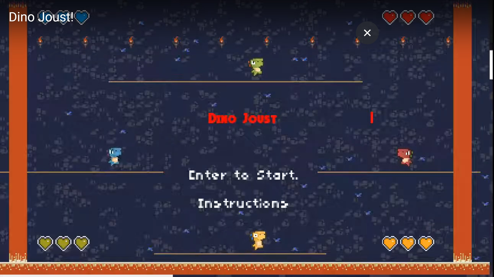

About Me
Hi! I am currently a sophomore in Computer Engineering at the University of Texas at Austin with a double major in Arts and Entertainment Technologies, and I am pursuing a technical core in Software Engineering. My coursework thus far has a bottom-up foundation, where I started by learning the microarchitecture of a computer and how gates and logic relate to code. From there, I gained experience with Assembly Language (namely ARM) through Introduction to Embedded Systems while also gaining experience in C through data structures in Software Design and Implementation. This past year, I have ventured further into software engineering within Software Design and Implementation II, where I explored more topics relating to data structures and complexity, this time while developing my skills in the Java language. This upcoming semester, I plan to take Algorithms.
Furthermore, I have been active in the community both within UT and in Austin by acting as a member of various organizations. Within UT, I am a member of the Texas Rocket Engineering Lab, where I have been a member of the Weather Balloon Team since February, 2020, developing various components necessary for the function of a weather balloon. I am also excited to be starting as a Team Lead! Additionally, I am a member of IEEE, where I act as a part of a community of electrical and computer engineers to develop the ECE community at UT Austin and the promotion of professional opportunities. Beyond UT Austin, I am happy to be a member of Code2College, where I am able to teach underrepresented students both in Austin and nationally to develop a foundation for a career in STEM through bi-weekly classes regarding computer science and its applications.
In my past education, I attended Heritage High School in Frisco, Texas, where I enrolled AP courses preparing for my college education, eventually earning a title as a National AP scholar. Simultaneously, I also took the Harvardx course CS50x, where I was taught the basics of coding from a variety of perspectives, learning topics such as data analysis, game developement, and data structures in the languages of C, Python, SQL, and Lua.
Among my interests, I am involved in music, running, weight lifting, and running. I played bass for my school orchestra in high school, where I participated in Solo&Ensemble and was a member of the regional orchestra. After high school, I have stayed involved by continuing my practice within both electric and standup bass, in addition to playing and developing my skills in guitar. As for running, I participated in the cross-country team in high school, and I ran the Dallas Half-Marathon in December of 2018. I am proud to be a member of each of these communities, and look forward to maintaining my interests!
Projects and Experience
Texas A&M - Commerce REU
During the summer of 2021, I worked alongside the professors at Texas A&M University - Commerce within the university's Research Experience for Undergraduates - Physics and Astronomy. This program offered a myriad of opportunities in developing my knowledge of numerous fields of study within astronomy and physics such as the development of organic solar panels, asteroid mapping, and the life-cycle of a star.
For my research, I worked alongside Dr. Bahar Modir to analyze a college physics class aimed at aspiring high school physics teachers in the effectiveness of teaching strategies and content for these students. This analysis was assisted by an online discussion board which eased the collection of data for this online class and allowed for quantitative analysis for these topics using the NetworkX Python library. From this analysis, I was able to conclude that the difficulty level, availability of socialization, presence of central members, and varying participation among members was necessary to facilitate the Community of Practice within a classroom. I was also able to later present these results and process of data collection virtually alongside a poster at an American Physics Society meeting in Houston.
DinoJoust

For a personal project, I decided to create a rendition of the arcade classic, Joust, in which two players try to defeat the other by either pushing them into lave or jumping on top of them. I created this game in the summer of 2020 using Lua, a language similar to Python except it acts as a scripting language that is exceptionally useful for game development. In the creation of the game, I was able to use a 2D platformer map of squares, and multiplayer input from various buttons on one keyboard - making the game easy for web distribution. Likewise, I implemented a party-style battle royale capability for this program through support for up to four players.